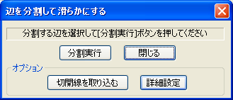
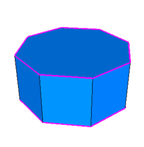
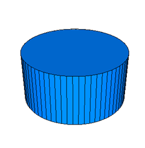
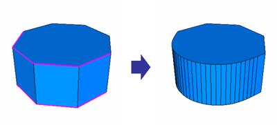
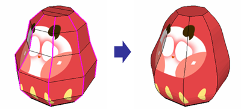
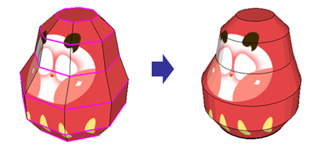
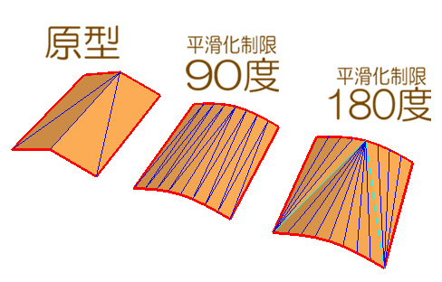

滑らかな形を作成する
特定の面を細分化する機能ですが、曲面の生成に特化しています。
指定した部位周辺の曲線・曲面の程度を判別し、より滑らかな面になるように細分化します。
1. [辺を分割して滑らかにする]ダイアログを開く
[3Dモデルウィンドウ]-[編集モード]から[辺を分割して滑らかにする]ダイアログを表示します。

[辺を分割して滑らかにする]ダイアログ
分割する辺をマウスでクリックして指定します。指定した辺はピンク色で表示されます。 分割辺のキャンセルは、一辺毎に個別にクリックするか、[3Dモデルウィンドウ]-[辺の属性をリセットする]で一気に初期化することができます。

八角柱の上面と底面の輪郭を指定した様子
3. 分割の実行
[分割実行]ボタンを押します。

曲線が細かく分割されました
分割の指定による結果の差異
同じ形でも、分割する辺の指定によって結果が異なったものになります。
先ほどの例の八角柱に対して、上面と底面の輪郭の一部分だけ指定した場合、結果は次のようになります。

指定する辺を一部にした場合
下の図は、だるまのモデルに対して、垂直方向と水平方向に分割する辺を指定した様子を示しています。

垂直方向に分割する辺を指定した結果

水平方向に分割する辺を指定した結果
また、[詳細設定]-[分割制限]の値で、分割した後の細かさを指定する事ができます。一般的には10%〜25%程度がよいでしょう。
[平滑化制限]の値は辺の分割が綺麗に決まらないときに数値を変えて再度トライしてみて下さい。
多くの場合100度前後の設定で問題ありません。
